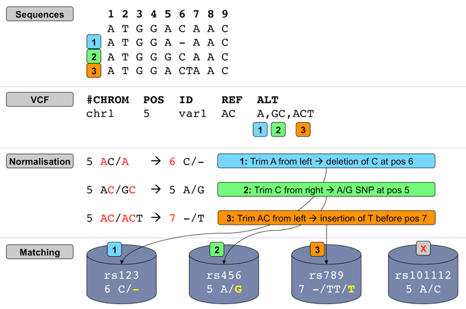
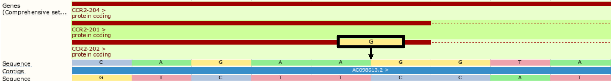
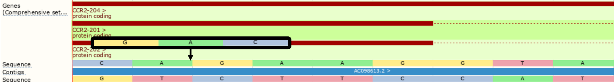

Variant Effect Predictor Other information
Other information
Getting VEP to run faster
Set up correctly, VEP is capable of processing around 3 million variants in 30 minutes. There are a number of steps you can take to make sure your VEP installation is running as fast as possible:
-
Make sure you have the
 latest version of
VEP and the Ensembl API. We regularly introduce optimisations, alongside the
new features and bug fixes of a typical new release.
latest version of
VEP and the Ensembl API. We regularly introduce optimisations, alongside the
new features and bug fixes of a typical new release. -
Download a cache file for your species. If you are using --database, you should consider using --cache or --offline instead. Any time VEP has to access data from the database (even if you have a local copy), it will be slower than accessing data in the cache on your local file system.
Enabling certain flags forces VEP to access the database, and you will be warned at startup that it will do this with e.g.:
2011-06-16 16:24:51 - INFO: Database will be accessed when using --check_svs
Consider carefully whether you need to use these flags in your analysis.
-
If you use --check_existing or any flags that invoke it (e.g. --af, --af_1kg, --filter_common, --everything), tabix-convert your cache file. Checking for known variants using a converted cache is >100% faster than using the default format.
-
Download a FASTA file (and use the flag --fasta) if you use --hgvs or --check_ref. Again, this will prevent VEP accessing the database unnecessarily (in this case to retrieve genomic sequence).
-
Using forking enables VEP to run multiple parallel "threads", with each thread processing a subset of your input. Most modern computers have more than one processor core, so running VEP with forking enabled can give huge speed increases (3-4x faster in most cases). Even computers with a single core will see speed benefits due to overheads associated with using object-oriented code in Perl.
To use forking, you must choose a number of forks to use with the --fork flag. We recommend using 4 forks:
./vep -i my_input.vcf --fork 4 --offline
but depending on various factors specific to your setup you may see faster performance with fewer or more forks.
When writing plugins be aware that while the VEP code attempts to preserve the state of any plugin-specific cached data between separate forks, there may be situations where data is lost. If you find this is the case, you should disable forking in the new() method of your plugin by deleting the "fork" key from the $config hash.
-
Make sure your cache and FASTA files are stored on the fastest file system or disk you have available. If you have a lot of memory in your machine, you can even pre-copy the files to memory using tmpfs.
-
Consider if you need to generate HGVS notations (--hgvs); this is a complex annotation step that can add ~50-80% to your runtime. Note also that --hgvs is switched on by --everything.
-
Install the Set::IntervalTree Perl package. This package speeds up VEP's internals by changing how overlaps between variants and transcript components are calculated.
-
Install the Ensembl::XS package. This contains compiled versions of certain key subroutines used in VEP that will run faster than the default native Perl equivalents. Using this should improve runtime by 5-10%.
-
Add the --no_stats flag. Calculating summary statistics increases VEP runtime, so can be switched off if not required
-
VEP is optimised to run on input files that are sorted in chromosomal order. Unsorted files will still work, albeit more slowly.
-
For very large files (for example those from whole-genome sequencing), VEP process can be easily parallelised by dividing your file into chunks (e.g. by chromosome). VEP will also work with tabix-indexed, bgzipped VCF files, and so the tabix utility could be used to divide the input file:
tabix -h variants.vcf.gz 12:1000000-20000000 | ./vep --cache --vcf
Species with multiple assemblies
Ensembl currently supports the two latest human assembly versions. We provide a VEP cache using the latest software version ([[SPECIESDEFS::ENSEMBL_VERSION]]) for both GRCh37 and GRCh38.
The VEP installer will install and set up the correct cache and FASTA file for your assembly of interest. If using the --AUTO functionality to install without prompts, remember to add the assembly version required using e.g. "--ASSEMBLY GRCh37". It is also possible to have concurrent installations of caches from both assemblies; just use the --assembly to select the correct one when you run VEP.
Once you have installed the relevant cache and FASTA file, you are then able to use VEP as normal. If you are using GRCh37 and require database access in addition to the cache (for example, to look up variant identifiers using --format id, see cache limitations), you will be warned you that you must change the database port in order to connect to the correct database:
ERROR: Cache assembly version (GRCh37) and database or selected assembly version (GRCh38) do not match If using human GRCh37 add "--port 3337" to use the GRCh37 database, or --offline to avoid database connection entirely
If you have data you wish to map to a new assembly, you can use the Ensembl assembly converter tool - if you've downloaded VEP, then you have it already! The tool is found in the ensembl-tools/scripts/assembly_converter folder. There is also an online version of the tool available. Both UCSC (liftOver) and NCBI (Remap) also provide tools for converting data between assemblies.
Summarising annotation
By default VEP is configured to provide annotation on every genomic feature that each input variant overlaps. This means that if a variant overlaps a gene with multiple alternate splicing variants (transcripts), then a block of annotation for each of these transcripts is reported in the output. In the default VEP output format each of these blocks is written on a single line of output; in VCF output format the blocks are separated by commas in the INFO field.
A number of options are provided to reduce the amount of output produced if this depth of annotation is not required.
Note

Example
Input data (VCF - input.vcf)
##fileformat=VCFv4.2 #CHROM POS ID REF ALT 1 230710048 rs699 A G 1 230710514 var_2 A G,T
Example of VEP command and output (no "pick" option):
./vep --cache -i input.vcf -o output.txt #Uploaded_variation Location Allele Gene Feature Feature_type Consequence cDNA_position CDS_position Protein_position Amino_acids Codons Existing_variation Extra rs699 1:230710048 G ENSG00000135744 ENST00000366667 Transcript missense_variant 1018 803 268 M/T aTg/aCg - IMPACT=MODERATE;STRAND=-1 rs699 1:230710048 G ENSG00000244137 ENST00000412344 Transcript downstream_gene_variant - - - - - - IMPACT=MODIFIER;DISTANCE=650;STRAND=-1 var_2 1:230710514 G ENSG00000135744 ENST00000366667 Transcript synonymous_variant 552 337 113 L Ttg/Ctg - IMPACT=LOW;STRAND=-1 var_2 1:230710514 T ENSG00000135744 ENST00000366667 Transcript missense_variant 552 337 113 L/M Ttg/Atg - IMPACT=MODERATE;STRAND=-1 var_2 1:230710514 G ENSG00000244137 ENST00000412344 Transcript downstream_gene_variant - - - - - - IMPACT=MODIFIER;DISTANCE=184;STRAND=-1 var_2 1:230710514 T ENSG00000244137 ENST00000412344 Transcript downstream_gene_variant - - - - - - IMPACT=MODIFIER;DISTANCE=184;STRAND=-1
Options
-
--pick
VEP chooses one block of annotation per variant, using an ordered set of criteria. This order may be customised using --pick_order.
- MANE Select transcript status
- MANE Plus Clinical transcript status
- canonical status of transcript
- APPRIS isoform annotation
- transcript support level
- biotype of transcript ("protein_coding" preferred)
- CCDS status of transcript
- consequence rank according to this table
- translated, transcript or feature length (longer preferred)
Note
Showexample of VEP command and output, with the "--pick" option.
-
--pick_allele
As above, but chooses one consequence block per variant allele. This can be useful for VCF input files with more than one ALT allele.
Show example of VEP command and output, with the "--pick_allele" option.
-
--per_gene
As --pick, but chooses one annotation block per gene that the input variant overlaps.
Show example of VEP command and output, with the "--per_gene" option.
-
--pick_allele_gene
As above, but chooses one consequence block per variant allele and gene combination.
Show example of VEP command and output, with the "--pick_allele_gene" option.
-
--flag_pick
Instead of choosing one block and removing the others, this option adds a flag "PICK=1" to picked annotation block, allowing you to easily filter on this later using VEP's filtering tool.
-
--flag_pick_allele
As above, but flags one block per allele.
-
--flag_pick_allele_gene
As above, but flags one block per allele and gene combination.
-
--most_severe
This flag reports only the consequence type of the block with the highest rank, according to this table.
Show example of VEP command and output, with the "--most_severe" option.
-
--summary
This flag reports only a comma-separated list of the consequence types predicted for this variant.
Show example of VEP command and output, with the "--summary" option.
Caution
HGVS notations
Output
HGVS notations can be produced by VEP using the --hgvs flag. Coding (c.) and protein (p.) notations given against Ensembl identifiers use versioned identifiers that guarantee the identifier refers always to the same sequence.
Genomic HGVS notations may be reported using --hgvsg. Note that the named reference for HGVSg notations will be the chromosome name from the input (as opposed to the officially recommended chromosome accession).
HGVS notations for insertions or deletions are by default shifted 3-prime relative to the reported transcript or protein sequence in accordance with HGVS specifications. This may lead to discrepancies between the coordinates reported in the HGVS nomenclature and the coordinate columns reported by VEP. You may instruct VEP not to shift using --shift_hgvs 0.
Reference sequence used as part of VEP's HGVSc calculations is taken from a given FASTA file, rather than the variant reference. HGVSp is calculated using the given variant reference.
Input
VEP supports using HGVS notations as input. This feature is currently under development and not all HGVS notation types are supported. Notations relative to genomic (g.) or coding (c.) sequences are fully supported; protein (p.) notations are supported in limited fashion due to the complexity involved in determining the multiple possible underlying genomic sequence changes that could produce a single protein change. A warning will be given if a particular notation cannot be parsed.
By default VEP uses Ensembl transcripts as the reference for determining consequences, and hence also for HGVS notations. However, it is possible to parse HGVS notations that use RefSeq transcripts as the reference sequence by using the --refseq flag. Such notations must include the version number of the transcript e.g.
NM_080794.3:c.1001C>T
where ".3" denotes that this is version 3 of the transcript NM_080794. See below for more details on how VEP can use RefSeq transcripts.
RefSeq transcripts
If you prefer to exclude predicted RefSeq transcripts (those with identifiers beginning with "XM_" or "XR_") use --exclude_predicted.
Can only be used for GRCh38
Identifiers and other data
VEP's RefSeq cache lacks many classes of data present in the Ensembl transcript cache.
-
Included in the RefSeq cache
- Gene symbol
- SIFT and PolyPhen predictions
-
Not included in the RefSeq cache
- APPRIS annotation
- TSL annotation
- UniProt identifiers
- CCDS identifiers
- Protein domains
- Gene-phenotype association data
Differences to the reference genome
RefSeq transcript sequences may differ from the genome sequence to which they are aligned. Ensembl's API (and hence VEP) constructs transcript models using the genomic reference sequence. These differences are accounted for using BAM-edited transcript models. in human cache files from release 90 onwards. Prior to release 90 and in non-human species differences between the RefSeq sequence and the genomic sequence are not accounted for, so some annotations produced by VEP on these transcripts may be inaccurate. Most differences occur in non-coding regions, typically in UTRs at either end of transcripts or in the addition of a poly-A tail, causing minimal impact on annotation.
For human VEP cache files, each RefSeq transcript is annotated with the REFSEQ_MATCH flag indicating whether and how the RefSeq model differs from the underlying genome.
Correcting transcript models with BAM files
NCBI have released BAM files that contain alignments of RefSeq transcripts to the genome. From release 90 onwards, these alignments have been incorporated and used to correct the transcript models in the human RefSeq and merged cache files.
VEP's cache building process uses the sequence and alignment in the BAM to correct the RefSeq model. If the corrected model does not match the original RefSeq sequence in the BAM, the corrected model is discarded. The success or failure of the BAM edit is recorded in the BAM_EDIT field of the VEP output. Failed edits are extremely rare (< 0.01% of transcripts), but any VEP annotations produced on transcripts with a failed edit status should be interpreted with extreme caution.
Using BAM-edited transcripts causes VEP to change how alleles are interpreted from input variants. Input variants are typically encoded in VCFs that are called using the reference genome. This means that the alternate (ALT) allele as given in the VCF may correspond to the reference allele as found in the corrected RefSeq transcript model. VEP will account for this, using the corrected reference allele (by enabling --use_transcript_ref) when calculating consequences, and the GIVEN_REF and USED_REF fields in the VEP output indicate any change made. If the reference allele derived from the transcript matches any given alternate (ALT) allele, then no consequence data will be produced for this allele as it will be considered non-variant. Note that this process may also clash with any interpretation from using --check_ref, so it is recommended to avoid using this flag.
To override the behaviour of --use_transcript_ref and force VEP to use your input reference allele instead of the one derived from the transcript, you may use --use_given_ref.
VEP can also side-load BAM files at runtime to correct transcript models on-the-fly; this allows corrections to be applied for other species, where alignments are available, or when using RefSeq GFF files, rather than the cache.
./vep --cache --refseq -i variants.vcf --species mus_musculus --bam GCF_000001635.26_GRCm38.p6_knownrefseq_alns.bam
BAM files are available from NCBI:
Note for the GRCh37 bam file
Existing or colocated variants
Use the --check_existing flag to identify known variants colocated with input variant. VEP's known variant cache is derived from Ensembl's variation database and contains variants from dbSNP and other sources.
VEP by default uses a normalisation-based allele matching algorithm to identify known variants that match input variants. Since both input and known variants may have multiple alternate (ALT) or variant alleles, each pair of reference (REF) and ALT alleles are normalised and compared independently to arrive at potential matches. VCF permits multiple allele types to be encoded on the same line, while dbSNP assigns separate rsID identifiers to different allele types at the same locus. This means different alleles from the same input variant may be assigned different known variant identifiers.

Illustration of VEP's allele matching algorithm resolving one VCF line with multiple ALTs to three different variant types and coordinates
Note that allele matching occurs independently of any allele transformations carried out by --minimal; VEP will match to the same identifiers and frequency data regardless of whether the flag is used.
For some data sources (COSMIC, HGMD), Ensembl is not licensed to redistribute allele-specific data, so VEP will report the existence of co-located variants with unknown alleles without carrying out allele matching. To disable this behaviour and exclude these variants, use the --exclude_null_alleles flag.
To disable allele matching completely and compare variant locations only, use --no_check_alleles.
Frequency data
In addition to identifying known variants, VEP also reports allele frequencies for input alleles from major genotyping projects (1000 genomes, gnomAD exomes and gnomAD genomes). VEP's cache currently contains only frequency data for alleles that have been submitted to dbSNP or are imported via another source into the Ensembl variation database. This means that until gnomAD's full data set is submitted to dbSNP and incorporated into Ensembl, the frequency for some alleles may be missing from VEP's cache data.
To access the full gnomAD data set, it is possible to use VEP's custom annotation feature to retrieve the frequency data directly from the gnomAD VCF files; see instructions here.
Normalising Consequences
Insertions and deletions in repetitive sequences can be often described at different equivalent locations and may therefore be assigned different consequence predictions. VEP can optionally convert variant alleles to their most 3’ representation before consequence calculation.
In the example below, we insert a G at the start of the repeated region. Without the --shift_3prime flag, VEP will calculate consequences at the input position and report the variant as a frameshift, and recognising that the variant lies within 2 bases of a splice site, as splice_region_variant.
./vep --cache -id '3 46358467 . A AG'
#Uploaded_variation Location Allele Gene Feature Feature_type Consequence cDNA_position CDS_position Protein_position Amino_acids Codons Existing_variation Extra
3_46358468_-/G 3:46358467-46358468 G ENSG00000121807 ENST00000292301 Transcript frameshift_variant,splice_region_variant 1425-1426 940-941 314 S/RX agc/aGgc -
IMPACT=HIGH;STRAND=1
...
However, with --shift_3prime switched on, VEP will right align all insertions and deletions within repeated regions, shifting the inserted G two positions to the right before consequence calculation, providing the splice_donor_variant consequence instead.
./vep --cache -id '3 46358467 . A AG' --shift_3prime 1
#Uploaded_variation Location Allele Gene Feature Feature_type Consequence cDNA_position CDS_position Protein_position Amino_acids Codons Existing_variation Extra 3_46358468_-/G 3:46358467-46358468 G ENSG00000121807 ENST00000292301 Transcript splice_donor_variant - - - - - - IMPACT=HIGH;STRAND=1 ...
Using --shift_genomic will also update the location field. However, --shift_genomic will also shift intergenic variants, which can lead to a reduction in performance.
./vep --cache -id '3 46358467 . A AG' --shift_genomic 1
#Uploaded_variation Location Allele Gene Feature Feature_type Consequence cDNA_position CDS_position Protein_position Amino_acids Codons Existing_variation Extra 3_46358468_-/G 3:46358469-46358470 G ENSG00000121807 ENST00000292301 Transcript splice_donor_variant - - - - - - IMPACT=HIGH;STRAND=1 ...
When shifting, insertions or deletions of length 2 or more can lead to alterations in the reported alternate allele. For example, an insertion of GAC that can be shifted 2 bases in the 3' direction will alter the alternate allele to CGA.
./vep --cache -id '3 46358464 . A AGAC' --shift_3prime 1
#Uploaded_variation Location Allele Gene Feature Feature_type Consequence cDNA_position CDS_position Protein_position Amino_acids Codons Existing_variation Extra 3_46358465_-/GAC 3:46358464-46358465 CGA ENSG00000121807 ENST00000292301 Transcript inframe_insertion,splice_region_variant 1424-1425 939-940 313-314 -/R -/CGA - IMPACT=MODERATE;STRAND=1 ...
./vep --cache -id '3 46358464 . A AGAC' --shift_3prime 0
#Uploaded_variation Location Allele Gene Feature Feature_type Consequence cDNA_position CDS_position Protein_position Amino_acids Codons Existing_variation Extra 3_46358465_-/GAC 3:46358464-46358465 GAC ENSG00000121807 ENST00000292301 Transcript inframe_insertion 1422-1423 937-938 313 R/RR aga/aGACga - IMPACT=MODERATE;STRAND=1